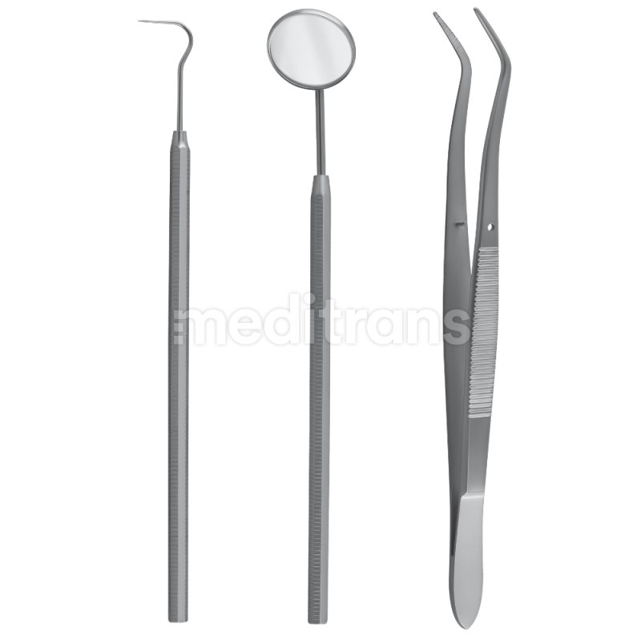
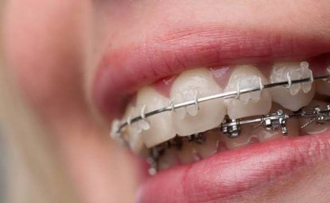
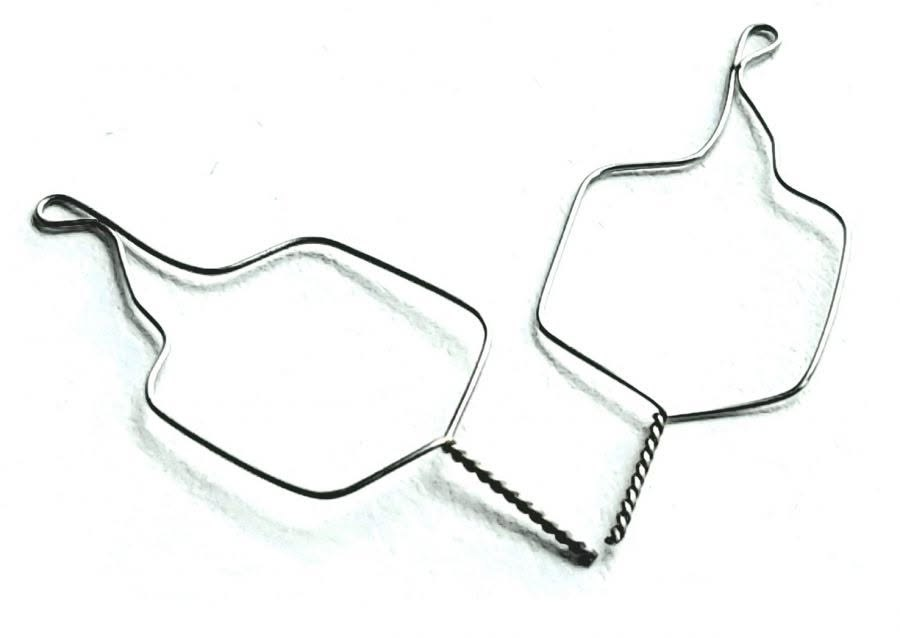

Kliknij zdjęcie, aby powiększyć.
NARZĘDZIE
Zestaw diagnostyczny
Podstawowy zestaw do badania jamy ustnej. Umożliwia ocenę stanu zębów i tkanek miękkich oraz kontrolę pola zabiegowego.
Najważniejsze jest nie tylko rozpoznanie instrumentu, ale wyjaśnienie, do czego służy i dlaczego znajduje się na przygotowanej tacy.
Zdjęcia przedstawiają pojedyncze, kompletne instrumenty, a nie obcięty zestaw. Kliknij zdjęcie, aby otworzyć je na pełnym ekranie.

Podstawowy zestaw do badania jamy ustnej. Umożliwia ocenę stanu zębów i tkanek miękkich oraz kontrolę pola zabiegowego.

Służy do chwytania i precyzyjnego pozycjonowania zamka podczas jego zakładania. Pozwala kontrolować mały element bez dotykania go palcami.

Smukłe kleszcze do chwytania, prowadzenia i ustawiania łuku ortodontycznego. Ząbkowane końcówki pomagają utrzymać drut.

Instrument przeznaczony do usuwania zamków podczas procedury zdejmowania aparatu. Używa się go zgodnie z techniką i instrukcją producenta.

Precyzyjne cięcie cienkiego drutu ligaturowego. Nie należy traktować ich jako zamiennika narzędzia do cięcia grubszego łuku.

Służą do odcinania końca łuku za ostatnim elementem aparatu; mechanizm safety hold może zatrzymać odcięty fragment.


Służy do kierowania i układania ligatur oraz odginania ich końców tak, aby nie drażniły tkanek. Może również pomagać w dociskaniu łuku.

Odsuwa policzki i wargi, poprawiając widoczność pola pracy. Wybór zależy od procedury i komfortu pacjenta.
| Zadanie | Przykładowe narzędzie | Co robi? |
|---|---|---|
| Diagnostyka i widoczność | Lusterko, retraktor | Zapewnia widoczność i dostęp do pola pracy. |
| Chwytanie i prowadzenie łuku | Kleszcze Weingarta | Chwytają i prowadzą łuk w obrębie aparatu. |
| Pozycjonowanie zamka | Uchwyt/pęseta do zamków | Umożliwia precyzyjne umieszczenie małego elementu. |
| Cięcie cienkiej ligatury | Ligature cutter | Przecina cienki drut ligaturowy. |
| Cięcie końca łuku | Distal end cutter | Odcina nadmiar łuku w tylnej części aparatu. |
| Ochrona tkanek | Ligature director | Odkłada końcówki ligatury, aby nie drażniły tkanek. |